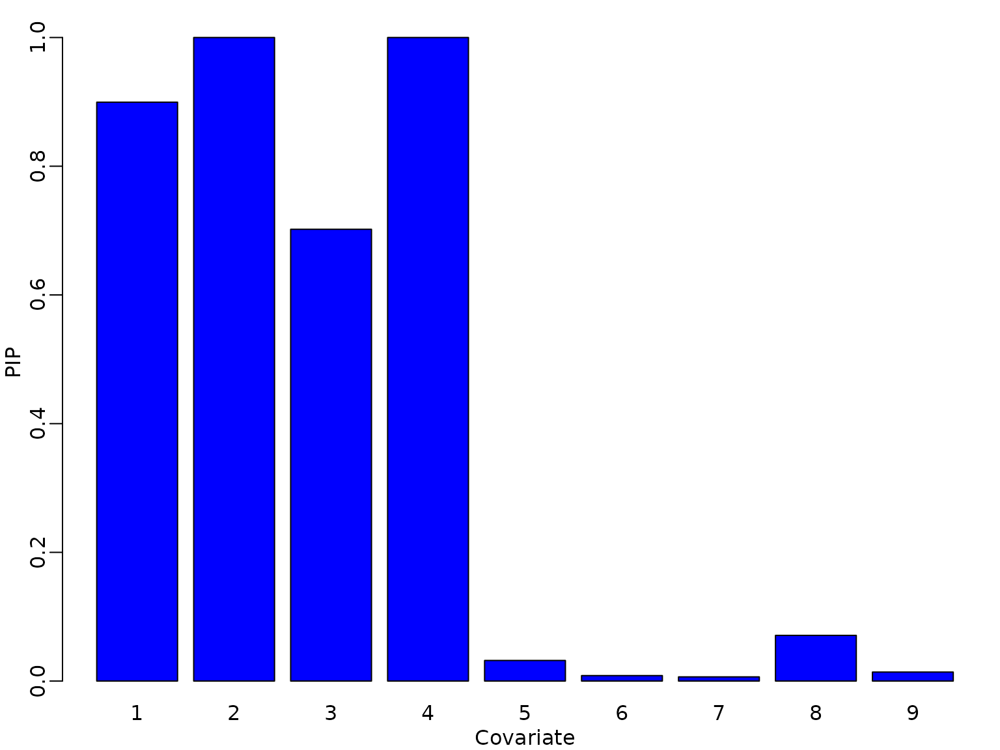
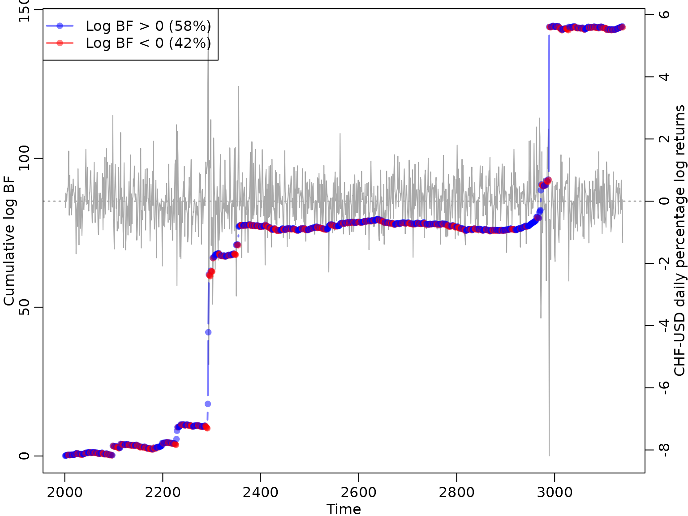

Chapter 12: Model Assessment and Predictive Model Checking
Chapter12.Rmd
pdfplots <- FALSE # default: FALSE; set this to TRUE only if you like pdf figures
mcmcspeedup <- 10L # default: 1L; set this to something higher for fewer draws
seed <- 42 # for reproducabilitySection 12.1: Beyond classical Bayesian model comparison
Section 12.1.1: Schwarz criterion and BIC
Example 12.1: Labor market data: Bayesian variable selection using BIC
We return to the probit analysis of Example 11.11 and run variable selection using the Schwarz criterion instead of the marginal likelihood. We first implement this approach.
modsel_probit_BIC <- function(y, X, burnin = 1000L, M = 5000L) {
N <- length(y)
p <- ncol(X)
gamma_post <- matrix(0L, nrow = M, ncol = p,
dimnames = list(NULL, colnames(X)))
acc <- integer(length = M)
gamma <- rep(1L, length.out = p)
mod0 <- glm(y ~ X, family = binomial(link = "probit"))
SC_old <- logLik(mod0) - log(N) * (p + 1) / 2
for (m in seq_len(burnin + M)) {
gamma_proposed <- gamma
j <- sample(1:p, size = 1)
gamma_proposed[j] <- 1 - gamma[j]
X_gamma <- X[, gamma_proposed == 1]
model <- glm(y ~ X_gamma, family = binomial(link = "probit"))
SC_proposed <- logLik(model) - log(N) * (sum(gamma_proposed) + 1) / 2
# Compute acceptance probability and decide on acceptance
log_acc <- SC_proposed - SC_old
if (log(runif(1)) < log_acc) {
gamma <- gamma_proposed
SC_old <- SC_proposed
accept <- 1L
} else {
accept <- 0L
}
if (m > burnin) {
gamma_post[m - burnin, ] <- gamma
acc[m - burnin] <- accept
}
}
return(list(gamma_post = gamma_post, acc = acc))
}Next we load the data and add 5 irrelevant, standard normal regressors as in Example 11.11. Then we run the algorithm.
library("BayesianLearningCode")
data("labor", package = "BayesianLearningCode")
y <- labor$income_1998 == "zero"
N <- length(y)
X_unemp <- with(labor, cbind(female = female,
age18 = 1998 - birthyear - 18,
wcollar = wcollar_1997,
unemp97 = income_1997 == "zero")) # regressor matrix
p_irrel <- 5
set.seed(seed)
X <- cbind(X_unemp, matrix(rnorm(p_irrel * N), ncol = p_irrel))
p <- ncol(X)
colnames(X)[ncol(X_unemp) + (1:p_irrel)] <-
paste0("irrel", seq_len(p_irrel))
M <- 20000 / mcmcspeedup
res <- modsel_probit_BIC(y, X, M = M)We determine the number of models visited during MCMC, the average model complexity, i.e., the average number of covariates included in the model, and show the posterior inclusion probabilities.
if (pdfplots) {
pdf("12-1_1.pdf", width = 5, height = 6)
}
par(mfrow = c(1, 1), mar = c(2.5, 2.5, 1.5, .5), mgp = c(1.5, .5, 0))
gammas <- unique(res$gamma_post)
nrow(gammas)
#> [1] 21
k_gamma <- rowSums(res$gamma_post)
mean(k_gamma)
#> [1] 3.7335
# PIPs
colMeans(res$gamma_post)
#> female age18 wcollar unemp97 irrel1 irrel2 irrel3 irrel4 irrel5
#> 0.8995 1.0000 0.7020 1.0000 0.0320 0.0085 0.0065 0.0710 0.0140
barplot(colMeans(res$gamma_post), col = "blue", names.arg = 1:p,
xlab = "Covariate", ylab = "PIP")
To determine the models visited most often we re-use a function which we defined in Chapter 11.
number_draws <- function(gamma_post, models) {
sapply(1:nrow(models), function(j)
sum(apply(gamma_post, 1, function(x) identical(x, models[j,]))))
}
n_gamma <- number_draws(res$gamma_post, gammas)
io <- order(n_gamma, decreasing = TRUE)
knitr::kable(cbind(gammas, phat_gamma = n_gamma / M)[io[1:5], ],
digits = c(rep(0, p), 4))| female | age18 | wcollar | unemp97 | irrel1 | irrel2 | irrel3 | irrel4 | irrel5 | phat_gamma |
|---|---|---|---|---|---|---|---|---|---|
| 1 | 1 | 1 | 1 | 0 | 0 | 0 | 0 | 0 | 0.5915 |
| 1 | 1 | 0 | 1 | 0 | 0 | 0 | 0 | 0 | 0.2060 |
| 0 | 1 | 0 | 1 | 0 | 0 | 0 | 0 | 0 | 0.0580 |
| 1 | 1 | 1 | 1 | 0 | 0 | 0 | 1 | 0 | 0.0380 |
| 0 | 1 | 1 | 1 | 0 | 0 | 0 | 0 | 0 | 0.0255 |
Section 12.2: Comparative model assessment through predictive information criteria
Section 12.2.2: Akaike information criterion (AIC)
Example 12.2: U.S. GDP data: Choosing the model order via AIC and BIC
We need to re-load the function which creates the design matrix.
ARdesignmatrix <- function(dat, p = 1, conditioninglength = p) {
d <- p + 1
N <- length(dat) - p
Xy <- matrix(NA_real_, N, d)
Xy[, 1] <- 1
for (i in seq_len(p)) {
Xy[, i + 1] <- dat[(p + 1 - i) : (length(dat) - i)]
}
Xy[(1 + conditioninglength - p):N, , drop = FALSE]
}Let’s load the data and compute log returns.
Now we compute five OLS estimates and the corresponding AICs and BICs.
AIC <- BIC <- rep(NA_real_, 5)
names(AIC) <- 0:4
for (i in seq_along(AIC)) {
y <- tail(logret, -4)
p <- i - 1 # lag length
d <- i + 1 # total number of parameters
N <- length(y) # number of data points used for estimation
Xy <- ARdesignmatrix(logret, p, conditioninglength = 4)
fit <- lm(y ~ Xy - 1)
betahat <- coef(fit)
sigma2hat <- sum(resid(fit)^2) / length(y)
minus2timesloglikmax <- N * (1 + log(2 * pi)) + N * log(sigma2hat)
AIC[i] <- minus2timesloglikmax + 2 * d # equals built-in AIC(fit)
BIC[i] <- minus2timesloglikmax + log(N) * d # equals built-in BIC(fit)
}
knitr::kable(rbind(AIC, BIC), digits = 2)| 0 | 1 | 2 | 3 | 4 | |
|---|---|---|---|---|---|
| AIC | -1808.61 | -1828.87 | -1839.65 | -1837.66 | -1836.24 |
| BIC | -1801.15 | -1817.68 | -1824.72 | -1819.01 | -1813.86 |
Example 12.3: CHF exchange rate data: Testing normal vs. t using AIC and BIC
Let’s load the data first and make some space for the draws under the three models.
data("exrates", package = "stochvol")
y <- 100 * diff(log(exrates$USD / exrates$CHF))
X <- 1
N <- length(y)The maximum likelihood estimator for normal data is known in closed form, while for the distribution we have to find it numerically. Thus, we write a function first. To ensure positivity for our parameter(s), we work on the log scale.
mle <- function(y, df = NULL) {
# We first define the negative log likelihood function. If df is NULL,
# par is expected to have two elements (logsigma and lognu), otherwise
# just one (logsigma)
nll <- function(y, par, df = NULL) {
sigma <- exp(par[1])
if (is.null(df)) nu <- exp(par[2]) else nu <- df
-sum(dstudt(y, 0, sigma, nu, log = TRUE))
}
s <- sqrt(mean(y^2)) # starting value
if (!is.null(df)) { # Case 1: df known/fixed
fit <- optim(log(s), nll, y = y, df = df,
method = "BFGS", hessian = TRUE)
} else { # Case 2: df is to be estimated
d <- 7 # starting value
fit <- optim(c(log(s), log(d)), nll, y = y,
method = "BFGS", hessian = TRUE)
}
list(muhat = 0,
sigma2hat = exp(fit$par[1])^2,
nuhat = if (is.null(df)) exp(fit$par[2]) else df,
loglik = -fit$value, convergence = fit$convergence,
hessian = fit$hessian)
}Now we can compute the MLEs.
mles <- matrix(NA_real_, nrow = 3, ncol = 2)
colnames(mles) <- c("sigma2", "nu")
mles[1, "sigma2"] <- mean(y^2) # same as mle(y, df = Inf)$sigma2hat
mles[1, "nu"] <- Inf
mles[2, "sigma2"] <- mle(y, df = 7)$sigma2hat
mles[2, "nu"] <- 7
mles[3, "sigma2"] <- mle(y)$sigma2hat
mles[3, "nu"] <- mle(y)$nuhatAnd finally, we compute AIC and BIC.
res <- matrix(NA_real_, nrow = nrow(mles), ncol = 2)
colnames(res) <- c("AIC", "BIC")
rownames(res) <- c("Gaussian", "t_7", "t_nu")
for (i in seq_len(nrow(mles))) {
ll <- sum(dstudt(y, 0, sqrt(mles[i, "sigma2"]), mles[i, "nu"], log = TRUE))
if (rownames(res)[i] == "t_nu") d <- 2 else d <- 1
res[i, "AIC"] <- -2 * ll + 2 * d
res[i, "BIC"] <- -2 * ll + log(N) * d
}
knitr::kable(t(res), digits = 2)| Gaussian | t_7 | t_nu | |
|---|---|---|---|
| AIC | 6906.93 | 6605.54 | 6605.59 |
| BIC | 6912.98 | 6611.59 | 6617.70 |
Section 12.2.3: Deviance information criterion (DIC)
Example 12.6: CHF exchange rate data: Testing normal vs. t using DIC
We will store the MCMC draws of the three models in questions.
draws <- vector("list", 3)Under the zero-mean Gaussian model, the posterior of is inverse gamma, and we can easily draw from it.
set.seed(seed)
c0 <- 2.5
C0 <- 1.5
SSR <- sum(y^2)
cN <- c0 + N / 2
CN <- C0 + SSR / 2
# number of draws
M <- 100000 / mcmcspeedup
# thinning to save some computer memory (1 = no thinning)
thin <- 1
draws[[1]]$sigma2s <- rinvgamma(M / thin, cN , CN)
draws[[1]]$nus <- InfUnder the t distribution with 7 degrees of freedom, the posterior of is not available in closed form, but we can draw from it using data augmentation.
sampler <- function(y, M, burnin, c0, C0, nu, thin = 1L) {
N <- length(y)
# starting value for w
w <- rep(1, N)
# pre-compute cN
cN <- c0 + N / 2
# allocate space for storing the draws
draws <- list()
draws$sigma2s <- rep(NA_real_, M)
draws$nus <- rep(nu, M)
draws$ws <- matrix(NA_real_, nrow = M, ncol = N)
for (m in 1:(burnin + M)) {
# sample sigma^2 from its full conditional (S-DA)
eps <- sqrt(w) * y
CN <- C0 + crossprod(eps) / 2
sigma2 <- rinvgamma(1, cN, CN)
# sample w (W-DA)
r <- eps^2 / (w * sigma2)
w <- rgamma(length(eps), (nu + 1) /2, (nu + r) / 2)
# store the results
if (m > burnin && (m - burnin) %% thin == 0L) {
draws$sigma2s[m - burnin] <- sigma2
draws$ws[m - burnin, ] <- w
}
}
draws
}Now we can run the sampler.
burnin <- 100
nu <- 7
draws[[2]] <- sampler(y, M, burnin, c0, C0, nu)For sampling also the degrees of freedom under an exponential prior, we re-run the sampler from Example 8.16, but this time without an intercept.
# fix tuning parameter for MH
cnu <- 0.3
# fix prior hyperparameters
lambda <- 1 / 7
# log likelihood
loglik <- function(y, sigma2, nu) {
sum(dstudt(y, 0, sqrt(sigma2), df = nu, log = TRUE))
}
# allocate space for storing the draws
draws[[3]]$nus <- draws[[3]]$sigma2s <- rep(NA_real_, M / thin)
draws[[3]]$ws <- matrix(NA_real_, nrow = M / thin, ncol = N)
# starting value for log(nu) and w
w <- rep(1, N)
nu <- 7
accepts <- 0L
for (m in 1:(burnin + M)) {
# sample sigma^2 from its full conditional (S-DA)
eps <- sqrt(w) * y
CN <- C0 + crossprod(eps) / 2
sigma2 <- rinvgamma(1, cN, CN)
# sample nu (N-MH)
nuprop <- exp(rnorm(1, log(nu), cnu))
logR <- loglik(y, sigma2, nuprop) -
loglik(y, sigma2, nu) +
dexp(nuprop, lambda, log = TRUE) -
dexp(nu, lambda, log = TRUE) +
log(nuprop) -
log(nu)
if (log(runif(1)) < logR) {
nu <- nuprop
if (m > burnin) accepts <- accepts + 1L
}
# sample w (W-DA)
r <- eps^2 / (w * sigma2)
w <- rgamma(length(eps), (nu + 1) /2, (nu + r) / 2)
# store the results
if (m > burnin && (m - burnin) %% thin == 0L) {
draws[[3]]$sigma2s[(m - burnin) / thin] <- sigma2
draws[[3]]$nus[(m - burnin) / thin] <- nu
draws[[3]]$ws[(m - burnin) / thin, ] <- w
}
}
print(accepts / M)
#> [1] 0.2928We can now estimate the DIC from the draws. First, we define the deviance function .
D_nonvec <- function(y, sigma2, nu) -2 * loglik(y, sigma2, nu)
D <- Vectorize(D_nonvec, c("sigma2", "nu"))Before we move on, let us define a function that sorts a vector into batches, and another one which computes the batch-wise means. That way, we can numerically gauge the precision of our estimates.
batches <- function(x, amount = 10) {
stopifnot(length(x) == 1L || length(x) %% amount == 0L)
matrix(x, ncol = amount)
}
batchMeans <- function(x, amount = 10) {
colMeans(batches(x, amount = amount))
}
batchMedians <- function(x, amount = 10) {
apply(batches(x, amount = amount), 2, median)
}Now, we estimate the average deviance, the deviance of the posterior averages, the effective number of parameters, and, finally, DIC.
res <- array(NA_real_, c(3, 4, 10))
colnames(res) <- c("DIC", "avgD", "Davg", "pd")
for (i in 1:nrow(res)) {
d <- draws[[i]]
res[i, "avgD", ] <- batchMeans(D(y, d$sigma2s, d$nus))
res[i, "Davg", ] <- D(y, batchMeans(d$sigma2s), batchMeans(d$nus))
res[i, "pd", ] <- res[i, "avgD", ] - res[i, "Davg", ]
res[i, "DIC", ] <- res[i, "avgD", ] + res[i, "pd", ]
}
mins <- apply(res, 1:2, min)
maxs <- apply(res, 1:2, max)
out <- matrix(paste0("[", roun(mins, 2), ", ", roun(maxs, 2), "]"),
nrow = dim(res)[1])
colnames(out) <- colnames(res)
rownames(out) <- c("Gaussian", "t_7", "t_nu")
knitr::kable(out)| DIC | avgD | Davg | pd | |
|---|---|---|---|---|
| Gaussian | [6906.83, 6907.09] | [6905.88, 6906.01] | [6904.93, 6904.94] | [0.95, 1.08] |
| t_7 | [6605.35, 6605.68] | [6604.45, 6604.62] | [6603.54, 6603.56] | [0.90, 1.06] |
| t_nu | [6605.29, 6606.21] | [6603.45, 6603.91] | [6601.61, 6601.76] | [1.79, 2.30] |
For the Gaussian model (only), we can compute the DIC in closed form.
cN <- c0 + N / 2
CN <- C0 + SSR / 2
Davg <- N * log(2 * pi * CN / (cN - 1)) + (cN - 1) * SSR / CN
avgD <- N * (log(2 * pi * CN) - digamma(cN)) + SSR * cN / CN
pd <- avgD - Davg
# Explicitly: N * (log(cN - 1) - digamma(cN)) + SSR / CN
DIC <- avgD + pd
# N * log(2 * pi * CN * (cN - 1)) - 2 * N * digamma(cN) + (cN + 1) * SSR / CN
knitr::kable(cbind(DIC, avgD, Davg, pd))| DIC | avgD | Davg | pd |
|---|---|---|---|
| 6906.922 | 6905.925 | 6904.927 | 0.997449 |
Example 12.7: CHF exchange rate data: Testing normal vs. Student t using hierarchical DIC
Because we also stored the weights, we can use the samples from above to compute conditional and augmented DICs. To do so, we first define the log conditional likelihood and the log augmented (“complete-data”) likelihood.
logcondlik <- function(y, sigma2, nu, w) {
sum(dnorm(y, 0, sqrt(sigma2 / w), log = TRUE))
}
logauglik <- function(y, sigma2, nu, w) {
logcondlik(y, sigma2, nu, w) + sum(dgamma(w, nu / 2, nu / 2, log = TRUE))
}Now we can compute the conditional and the augmented DIC.
res <- array(NA_real_, c(2, 4, 10))
colnames(res) <- c("DIC_C", "pd_C", "DIC_A", "pd_A")
for (i in 1:nrow(res)) {
d <- draws[[i + 1]]
# Evaluate the log conditional likelihood at all posterior draws
alllogcondlik <- sapply(seq_along(d$sigma2s), function(j) {
logcondlik(y, d$sigma2s[j], d$nus[j], d$ws[j, ])
})
# Compute the average conditional deviance
avgcondD <- -2 * batchMeans(alllogcondlik)
# Evaluate the log augmented likelihood at all posterior draws
alllogauglik <- sapply(seq_along(d$sigma2s), function(j) {
logauglik(y, d$sigma2s[j], d$nus[j], d$ws[j, ])
})
# Evaluate the unnormalized log posterior
alllogpost_unnormalized <- alllogauglik +
dinvgamma(d$sigma2s, c0, C0, log = TRUE) + dexp(d$nus, lambda, log = TRUE)
# Find the index of the posterior draw with highest joint posterior density
MAPind <- apply(batches(alllogpost_unnormalized), 2, which.max)
# Evaluate the conditional deviance at the MAP
estcondD <- -2 * batches(alllogcondlik)[cbind(MAPind, seq_len(dim(res)[3]))]
# Compute conditional pd and conditional DIC
res[i, "pd_C", ] <- avgcondD - estcondD
res[i, "DIC_C", ] <- 2 * avgcondD - estcondD
# Compute the average augmented deviance
avgaugD <- -2 * batchMeans(alllogauglik)
# Evaluate the augmented deviance at the MAP
estaugD <- -2 * batches(alllogauglik)[cbind(MAPind, seq_len(dim(res)[3]))]
# Compute augmented pd and augmented DIC
res[i, "pd_A", ] <- avgaugD - estaugD
res[i, "DIC_A", ] <- 2 * avgaugD - estaugD
}
mins <- apply(res, 1:2, min)
maxs <- apply(res, 1:2, max)
out <- matrix(paste0("[", roun(mins, 2), ", ", roun(maxs, 2), "]"),
nrow = dim(res)[1])
colnames(out) <- colnames(res)
rownames(out) <- c("t_7", "t_nu")
knitr::kable(out)| DIC_C | pd_C | DIC_A | pd_A | |
|---|---|---|---|---|
| t_7 | [6125.46, 6231.83] | [3.55, 108.02] | [10705.80, 10784.09] | [229.25, 308.95] |
| t_nu | [5901.34, 6091.61] | [-179.81, 12.03] | [11276.91, 11594.55] | [590.60, 861.75] |
Our MAP approximation is probably rather bad (remember that we are trying to find the maximum of a high-dimensional function). Let us try to exploit the fact that the conditional maxima of the ws are available in closed form.
# Non-normalized negative joint log-posterior, with w replaced by
# its closed-form conditional mode
objective <- function(par, y, c0, C0, lambda) {
sigma2 <- exp(par[1]) # sigma2 must be positive
nu <- 1 + exp(par[2]) # nu must be > 1 for the conditional mode to exist
# Conditional mode of w_i | y_i, sigma2, nu
# print(round(c(nu, sigma2), 2))
w_hat <- (nu - 1) / (nu + y^2 / sigma2)
# Log likelihood: y | w, sigma2
loglik <- sum(dnorm(y, 0, sqrt(sigma2 / w_hat), log = TRUE))
# Log prior: w | nu
log_w_prior <- sum(dgamma(w_hat, nu / 2, nu / 2, log = TRUE))
# Inverse-Gamma prior for sigma2 (shape c0, rate C0)
log_sigma2_prior <- dinvgamma(sigma2, c0, C0, log = TRUE)
# Exponential prior for nu
log_nu_prior <- dexp(nu, lambda, log = TRUE)
logpost <- loglik + log_w_prior + log_sigma2_prior + log_nu_prior
-logpost
}
fit <- optim(log(c(mean(y^2), 7 - 1)), objective, method = "BFGS",
y = y, c0 = c0, C0 = C0, lambda = lambda)
sigma2_hat <- exp(fit$par[1])
nu_hat <- 1 + exp(fit$par[2])
w_hat <- (nu_hat - 1) / (nu_hat + y^2 / sigma2_hat)This doesn’t seem to work too well, either. (Thinking a bit about it reveals that the joint mode is degenerate.)
Let’s also try with the posterior mean as point estimate.
res <- array(NA_real_, c(2, 4, 10))
colnames(res) <- c("DIC_C", "pd_C", "DIC_A", "pd_A")
for (i in 1:nrow(res)) {
d <- draws[[i + 1]]
# Evaluate the log conditional likelihood at all posterior draws
alllogcondlik <- sapply(seq_along(d$sigma2s), function(j) {
logcondlik(y, d$sigma2s[j], d$nus[j], d$ws[j, ])
})
# Compute the average conditional deviance
avgcondD <- -2 * batchMeans(alllogcondlik)
# Evaluate the log augmented likelihood at all posterior draws
alllogauglik <- sapply(seq_along(d$sigma2s), function(j) {
logauglik(y, d$sigma2s[j], d$nus[j], d$ws[j, ])
})
# Evaluate the conditional deviance at the posterior mean
sigma2means <- batchMeans(d$sigma2s)
numeans <- batchMeans(d$nus)
wmeans <- apply(d$ws, 2, batchMeans)
estcondD <- rep(NA_real_, dim(res)[3])
for (j in seq_len(dim(res)[3])) {
estcondD[j] <- -2 * logcondlik(y, sigma2means[j], numeans[j], wmeans[j, ])
}
# Compute conditional pd and conditional DIC
res[i, "pd_C", ] <- avgcondD - estcondD
res[i, "DIC_C", ] <- 2 * avgcondD - estcondD
# Compute the average augmented deviance
avgaugD <- -2 * batchMeans(alllogauglik)
# Evaluate the augmented deviance at the posterior mean
estaugD <- rep(NA_real_, dim(res)[3])
for (j in seq_len(dim(res)[3])) {
estaugD[j] <- -2 * logauglik(y, sigma2means[j], numeans[j], wmeans[j, ])
}
# Compute augmented pd and augmented DIC
res[i, "pd_A", ] <- avgaugD - estaugD
res[i, "DIC_A", ] <- 2 * avgaugD - estaugD
}
mins <- apply(res, 1:2, min)
maxs <- apply(res, 1:2, max)
out <- matrix(paste0("[", roun(mins, 2), ", ", roun(maxs, 2), "]"),
nrow = dim(res)[1])
colnames(out) <- colnames(res)
rownames(out) <- c("t_7", "t_nu")
knitr::kable(out)| DIC_C | pd_C | DIC_A | pd_A | |
|---|---|---|---|---|
| t_7 | [6529.24, 6533.37] | [408.05, 409.50] | [12917.69, 12930.58] | [2445.54, 2454.44] |
| t_nu | [6539.79, 6545.51] | [451.65, 463.20] | [13076.67, 13106.25] | [2366.44, 2390.37] |
And the median.
res <- array(NA_real_, c(2, 4, 10))
colnames(res) <- c("DIC_C", "pd_C", "DIC_A", "pd_A")
for (i in 1:nrow(res)) {
d <- draws[[i + 1]]
# Evaluate the log conditional likelihood at all posterior draws
alllogcondlik <- sapply(seq_along(d$sigma2s), function(j) {
logcondlik(y, d$sigma2s[j], d$nus[j], d$ws[j, ])
})
# Compute the average conditional deviance
avgcondD <- -2 * batchMeans(alllogcondlik)
# Evaluate the log augmented likelihood at all posterior draws
alllogauglik <- sapply(seq_along(d$sigma2s), function(j) {
logauglik(y, d$sigma2s[j], d$nus[j], d$ws[j, ])
})
# Evaluate the conditional deviance at the posterior median
sigma2medians <- batchMedians(d$sigma2s)
numedians <- batchMedians(d$nus)
wmedians <- apply(d$ws, 2, batchMedians)
estcondD <- rep(NA_real_, dim(res)[3])
for (j in seq_len(dim(res)[3])) {
estcondD[j] <- -2 * logcondlik(y, sigma2medians[j], numedians[j],
wmedians[j, ])
}
# Compute conditional pd and conditional DIC
res[i, "pd_C", ] <- avgcondD - estcondD
res[i, "DIC_C", ] <- 2 * avgcondD - estcondD
# Compute the average augmented deviance
avgaugD <- -2 * batchMeans(alllogauglik)
# Evaluate the augmented deviance at the posterior median
estaugD <- rep(NA_real_, dim(res)[3])
for (j in seq_len(dim(res)[3])) {
estaugD[j] <- -2 * logauglik(y, sigma2medians[j], numedians[j],
wmedians[j, ])
}
# Compute augmented pd and augmented DIC
res[i, "pd_A", ] <- avgaugD - estaugD
res[i, "DIC_A", ] <- 2 * avgaugD - estaugD
}
mins <- apply(res, 1:2, min)
maxs <- apply(res, 1:2, max)
out <- matrix(paste0("[", roun(mins, 2), ", ", roun(maxs, 2), "]"),
nrow = dim(res)[1])
colnames(out) <- colnames(res)
rownames(out) <- c("t_7", "t_nu")
knitr::kable(out)| DIC_C | pd_C | DIC_A | pd_A | |
|---|---|---|---|---|
| t_7 | [6518.02, 6521.56] | [396.43, 398.97] | [13365.11, 13376.81] | [2892.64, 2899.26] |
| t_nu | [6523.65, 6529.91] | [436.38, 447.13] | [13556.18, 13614.69] | [2831.16, 2885.25] |
Finally, we use the actual joint posterior mode of . We find it through simple (block) coordinate ascent: the conditional modes of the and of are available in closed form, and is updated through a one-dimensional numerical maximization.
logpost_joint <- function(y, sigma2, nu, w, c0, C0, lambda) {
logauglik(y, sigma2, nu, w) + dinvgamma(sigma2, c0, C0, log = TRUE) +
dexp(nu, lambda, log = TRUE)
}
# If nu is supplied, it is held fixed and only (w, sigma2) are optimized.
joint_mode <- function(y, c0, C0, lambda, nu = NULL, tol = 1e-10,
maxit = 10000L) {
fixed_nu <- !is.null(nu)
if (!fixed_nu) nu <- 7
sigma2 <- mean(y^2)
lp_old <- -Inf
for (it in seq_len(maxit)) {
# Mode of w_i | y_i, sigma2, nu ~ Gamma((nu + 1) / 2, (nu + y_i^2 / sigma2) / 2)
w <- (nu - 1) / (nu + y^2 / sigma2)
# Mode of sigma2 | y, w
sigma2 <- (C0 + sum(w * y^2) / 2) / (c0 + 1 + length(y) / 2)
# Mode of nu | w (the objective is concave in nu)
if (!fixed_nu) {
nu <- exp(optimize(
function(u) logpost_joint(y, sigma2, exp(u), w, c0, C0, lambda),
log(c(1 + 1e-6, 1e6)), maximum = TRUE, tol = 1e-10)$maximum)
}
lp <- logpost_joint(y, sigma2, nu, w, c0, C0, lambda)
if (lp - lp_old < tol * (1 + abs(lp))) break
lp_old <- lp
}
list(sigma2 = sigma2, nu = nu, w = w, logpost = lp, iterations = it)
}
modes <- list(joint_mode(y, c0, C0, lambda, nu = 7),
joint_mode(y, c0, C0, lambda))
knitr::kable(data.frame(model = c("t_7", "t_nu"),
sigma2 = sapply(modes, `[[`, "sigma2"),
nu = sapply(modes, `[[`, "nu"),
logpost = sapply(modes, `[[`, "logpost"),
iterations = sapply(modes, `[[`, "iterations")),
digits = 3)| model | sigma2 | nu | logpost | iterations |
|---|---|---|---|---|
| t_7 | 0.231 | 7.0 | -3497.511 | 12 |
| t_nu | 0.527 | 10979.8 | 5608.022 | 7 |
Now we compute the conditional and the augmented DIC at the joint mode.
res <- array(NA_real_, c(2, 4, 10))
colnames(res) <- c("DIC_C", "pd_C", "DIC_A", "pd_A")
for (i in 1:nrow(res)) {
d <- draws[[i + 1]]
# Evaluate the log conditional likelihood at all posterior draws
alllogcondlik <- sapply(seq_along(d$sigma2s), function(j) {
logcondlik(y, d$sigma2s[j], d$nus[j], d$ws[j, ])
})
# Compute the average conditional deviance
avgcondD <- -2 * batchMeans(alllogcondlik)
# Evaluate the log augmented likelihood at all posterior draws
alllogauglik <- sapply(seq_along(d$sigma2s), function(j) {
logauglik(y, d$sigma2s[j], d$nus[j], d$ws[j, ])
})
# Evaluate the deviances at the posterior mode (the same for all batches)
sigma2_mode <- modes[[i]]$sigma2
nu_mode <- modes[[i]]$nu
w_mode <- modes[[i]]$w
estcondD <- -2 * logcondlik(y, sigma2_mode, nu_mode, w_mode)
# Compute conditional pd and conditional DIC
res[i, "pd_C", ] <- avgcondD - estcondD
res[i, "DIC_C", ] <- 2 * avgcondD - estcondD
# Compute the average augmented deviance
avgaugD <- -2 * batchMeans(alllogauglik)
# Evaluate the augmented deviance at the posterior mode
estaugD <- -2 * logauglik(y, sigma2_mode, nu_mode, w_mode)
# Compute augmented pd and augmented DIC
res[i, "pd_A", ] <- avgaugD - estaugD
res[i, "DIC_A", ] <- 2 * avgaugD - estaugD
}
mins <- apply(res, 1:2, min)
maxs <- apply(res, 1:2, max)
out <- matrix(paste0("[", roun(mins, 2), ", ", roun(maxs, 2), "]"),
nrow = dim(res)[1])
colnames(out) <- colnames(res)
rownames(out) <- c("t_7", "t_nu")
knitr::kable(out)| DIC_C | pd_C | DIC_A | pd_A | |
|---|---|---|---|---|
| t_7 | [6778.86, 6785.53] | [658.32, 661.66] | [13956.44, 13971.58] | [3484.29, 3491.86] |
| t_nu | [5254.61, 5281.59] | [-823.72, -810.23] | [35729.39, 35831.18] | [25043.08, 25093.98] |
The negative for the model is a symptom of the degenerate joint mode: the exponential prior is the only thing that keeps finite, so the mode sits at with all close to one, far away from the bulk of the posterior.
To compare the four plug-in points directly, we collect the conditional and the augmented DIC (and the corresponding ) in one table. The entries are the ranges over the ten batches.
dic_plugin <- function(i, nb = 10L) {
d <- draws[[i + 1]]
# Log conditional and augmented likelihood at all posterior draws
alllogcondlik <- sapply(seq_along(d$sigma2s), function(j) {
logcondlik(y, d$sigma2s[j], d$nus[j], d$ws[j, ])
})
alllogauglik <- sapply(seq_along(d$sigma2s), function(j) {
logauglik(y, d$sigma2s[j], d$nus[j], d$ws[j, ])
})
avgcondD <- -2 * batchMeans(alllogcondlik)
avgaugD <- -2 * batchMeans(alllogauglik)
# Deviances at plug-in values (one value per batch)
deviances <- function(sigma2, nu, w) {
list(C = sapply(seq_len(nb), function(j)
-2 * logcondlik(y, sigma2[j], nu[j], w[j, ])),
A = sapply(seq_len(nb), function(j)
-2 * logauglik(y, sigma2[j], nu[j], w[j, ])))
}
# Draw with highest joint posterior density within each batch
alllogpost <- alllogauglik + dinvgamma(d$sigma2s, c0, C0, log = TRUE) +
dexp(d$nus, lambda, log = TRUE)
MAPind <- apply(batches(alllogpost), 2, which.max)
idx <- MAPind + (seq_len(nb) - 1L) * (length(d$sigma2s) / nb)
mode <- modes[[i]]
plugins <- list(
"MAP draw" = deviances(d$sigma2s[idx], d$nus[idx], d$ws[idx, , drop = FALSE]),
"posterior mean" = deviances(batchMeans(d$sigma2s), batchMeans(d$nus),
apply(d$ws, 2, batchMeans)),
"posterior median" = deviances(batchMedians(d$sigma2s), batchMedians(d$nus),
apply(d$ws, 2, batchMedians)),
"joint mode" = deviances(rep(mode$sigma2, nb), rep(mode$nu, nb),
matrix(mode$w, nb, length(y), byrow = TRUE))
)
do.call(rbind, lapply(plugins, function(p) {
vals <- cbind(DIC_C = 2 * avgcondD - p$C, pd_C = avgcondD - p$C,
DIC_A = 2 * avgaugD - p$A, pd_A = avgaugD - p$A)
paste0("[", roun(apply(vals, 2, min)), ", ", roun(apply(vals, 2, max)), "]")
}))
}
out <- rbind(dic_plugin(1), dic_plugin(2))
colnames(out) <- c("DIC_C", "pd_C", "DIC_A", "pd_A")
rownames(out) <- paste0(rep(c("t_7", "t_nu"), each = 4), ": ",
rep(c("MAP draw", "mean", "median", "joint mode"), 2))
knitr::kable(out)| DIC_C | pd_C | DIC_A | pd_A | |
|---|---|---|---|---|
| t_7: MAP draw | [6125, 6232] | [4, 108] | [10706, 10784] | [229, 309] |
| t_7: mean | [6529, 6533] | [408, 410] | [12918, 12931] | [2446, 2454] |
| t_7: median | [6518, 6522] | [396, 399] | [13365, 13377] | [2893, 2899] |
| t_7: joint mode | [6779, 6786] | [658, 662] | [13956, 13972] | [3484, 3492] |
| t_nu: MAP draw | [5901, 6092] | [-180, 12] | [11277, 11595] | [591, 862] |
| t_nu: mean | [6540, 6546] | [452, 463] | [13077, 13106] | [2366, 2390] |
| t_nu: median | [6524, 6530] | [436, 447] | [13556, 13615] | [2831, 2885] |
| t_nu: joint mode | [5255, 5282] | [-824, -810] | [35729, 35831] | [25043, 25094] |
Only the posterior mean and the posterior median give stable and plausible results for both models; the MAP draw is very noisy across batches with close to zero or negative, and the joint mode inflates for and is degenerate for .
Section 12.2.4: Widely applicable information criterion (WAIC)
Example 12.8: CHF exchange rate data: Testing normal vs. t using WAIC
resWAIC <- array(NA_real_, c(3, 6, 10))
colnames(resWAIC) <-
c("WAIC", "Dbiased", "phat", "WAIC_C", "Dbiased_C", "phat_C")
logpredlik <- Ehat <- Vhat <- logcondpredlik <- condEhat <- condVhat <-
matrix(NA_real_, length(y), dim(resWAIC)[3])
for (i in 1:nrow(resWAIC)) {
d <- draws[[i]]
for (j in seq_along(y)) {
logpredlikdraws <- dstudt(y[j], 0, sqrt(d$sigma2s), d$nus, log = TRUE)
logpredlik[j, ] <- apply(batches(logpredlikdraws), 2, logmeanexp)
Ehat[j, ] <- batchMeans(logpredlikdraws)
Vhat[j, ] <- batchMeans(logpredlikdraws^2) - Ehat[j ,]^2
if (i >= 2L) { # also evaluate the log conditional predictive likelihood
logcondpredlikdraws <- dnorm(y[j], 0, sqrt(d$sigma2s / d$ws[, j]),
log = TRUE)
logcondpredlik[j, ] <- apply(batches(logcondpredlikdraws), 2, logmeanexp)
condEhat[j, ] <- batchMeans(logcondpredlikdraws)
condVhat[j, ] <- batchMeans(logcondpredlikdraws^2) - condEhat[j ,]^2
}
}
resWAIC[i, "Dbiased", ] <- -2 * colSums(logpredlik)
resWAIC[i, "phat", ] <- colSums(Vhat)
resWAIC[i, "WAIC", ] <- resWAIC[i, "Dbiased", ] + 2 * resWAIC[i, "phat", ]
if (i >= 2L) { # also evaluate the log conditional predictive likelihood
resWAIC[i, "Dbiased_C", ] <- -2 * colSums(logcondpredlik)
resWAIC[i, "phat_C", ] <- colSums(condVhat)
resWAIC[i, "WAIC_C", ] <-
resWAIC[i, "Dbiased_C", ] + 2 * resWAIC[i, "phat_C", ]
}
}
mins <- apply(resWAIC, 1:2, min)
maxs <- apply(resWAIC, 1:2, max)
s <- c(1, 3:4, 6)
out <- matrix(paste0("[", roun(mins[, s], 2), ", ", roun(maxs[, s], 2), "]"),
nrow = dim(resWAIC)[1])
out[out == "[NA, NA]"] <- ""
colnames(out) <- colnames(resWAIC)[s]
rownames(out) <- c("Gaussian", "t_7", "t_nu")
knitr::kable(out)| WAIC | phat | WAIC_C | phat_C | |
|---|---|---|---|---|
| Gaussian | [6910.80, 6911.71] | [4.81, 5.49] | ||
| t_7 | [6605.36, 6605.69] | [0.92, 1.07] | [6484.40, 6488.91] | [302.25, 304.54] |
| t_nu | [6605.66, 6606.81] | [2.19, 2.86] | [6467.73, 6479.75] | [321.95, 326.35] |
Section 12.3: Comparative model assessment through scoring rules
Section 12.3.1: Log predictive density scores
Example 12.?: CHF exchange rate data: Testing normal vs. t using LPDS
We first set the prior parameters as in Example 10.9.
nu <- 7
c10 <- c30 <- 3
C10 <- 3
C30 <- (nu - 2) / nu * C10Next, we define our expanding estimation window.
Now we run the prediction on the expanding window and evaluate the one-step ahead predictive likelihood. For the normal model, this can be done analytically, for the Student t model, we need MCMC draws.
set.seed(seed)
M <- 100 / mcmcspeedup
burnin <- 100 / mcmcspeedup
LPDS <- matrix(NA_real_, 2, length(trainends))
for (i in seq_along(trainends)) {
ytrain <- y[seq_len(trainends[i])]
Ntrain <- length(ytrain)
ytest <- y[trainends[i] + 1]
# Normal model
c1N <- c10 + 0.5 * Ntrain
C1N <- C10 + 0.5 * sum(ytrain^2)
LPDS[1, i] <- dstudt(ytest, 0, sqrt(C1N / c1N), 2 * c1N, log = TRUE)
# Student t model
draws <- sampler(ytrain, M, burnin, c30, C30, nu)
logpreddraws <- dstudt(ytest, 0, sqrt(draws$sigma2s), draws$nus, log = TRUE)
LPDS[2, i] <- logmeanexp(logpreddraws)
}Now we compare and visualize.
logBF <- LPDS[2, ] - LPDS[1, ]
cumlogBF <- cumsum(logBF)
xs <- trainends + 1
plot(xs, y[xs], col = "darkgrey", xlab = "Time", ylab = "", yaxt = "n",
type = "l")
axis(4)
mtext("CHF-USD daily percentage log returns", side = 4, line = 1.5)
abline(h = 0, lty = 3, col = "darkgray", lwd = 1.5)
par(new = TRUE)
plot(xs, cumlogBF, col = rgb(logBF < 0, 0, logBF > 0, .5), type = "b",
axes = FALSE, xlab = "", ylab = "", pch = 16, lwd = 2)
axis(2)
mtext("Cumulative log BF", side = 2, line = 1.5)
legend("topleft", c(paste0("Log BF > 0 (", round(100 * mean(logBF > 0)), "%)"),
paste0("Log BF < 0 (", round(100 * mean(logBF < 0)), "%)")),
col = rgb(c(0, 1), 0, c(1, 0), .5), pch = 16, lty = 1, lwd = 2)